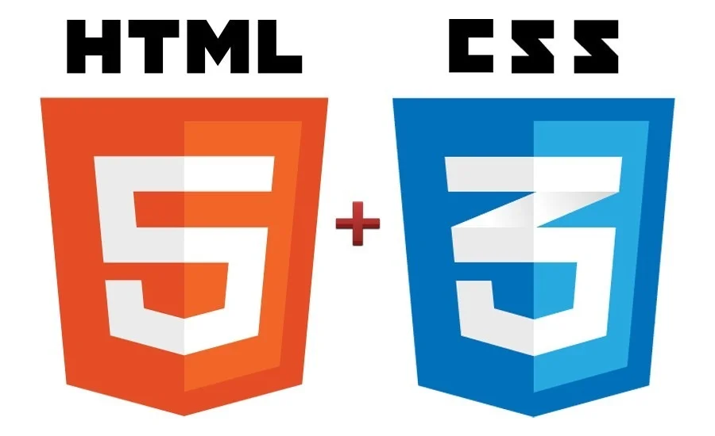

HTML5
Versão atual da Linguagem HTML
O HTML5 é a versão mais recente do HTML. Ele começou a ser desenvolvido em 2006, a partir de uma união entre o grupo WHATWG (Web Hipertext Application Technology Working Working Group), frmado por desenvolvedores de empresas como Mozilla, Apple e Opera, e o W3C (World Wide Web Consortium), um consórcio liderado por Tim Berners-Lee, o desenvolvedor original do HTML.
Os motivos que levaram à nova versão foram os fatos de o HTML4 (versão essa que você aprendeu nas aulas anteriores), não trazer uma boa semântica (significado) para o código e não ajudar CSS na formatação do mesmo. Para melhorar isso, o HTML5 desenvolveu novas tags e alterou a colocação de outras. Agora, existe uma tag específica para cada parte da página, por exemplo, cabeçalho, rodapé, menu de navegação, etc.
O HTML5 e o CSS3 estão sendo desenvolvidos em módulos. Isso significa que você não precisa esperar que todo o padrão dessas novas versões seja criado para poder usá-las. Porém, você deve estar sempre atento às atualizações de W3C, que é o consórcio responsável por cuidar das especificações do HTML. Um desenvolvedor web deve acessar constantemente o site desse consórcio, pois ele é a base de tudo para criar páginas da internet.